昨天晚上睡在網咖，寫完遊記大約是凌晨兩點半，網咖裡還是滿滿的人。
這間網咖還蠻舒適的，椅子大的像是床一樣，我就直接躺下去睡覺。
一個晚上睡睡醒醒的，說舒服其實也還不錯。
因為睡著之後就聽不到聲音了，隔壁的人也不抽煙，網咖裡的喇叭音量也開不大。
等我睡醒之後是早上七點，左邊的從玩天堂變成玩CS，從女生變成男生。
迷迷糊糊的上線看一下討論區跟新聞，然後去梳洗。
包了十二個小時的電腦，全部的使用時間不到半小時。
七點四十分，離開網咖，這間網咖位於台中市火車站附近。
昨天不知道怎麼騎的，從台一線騎到這邊來。
所以現在第一要務就是騎回台一線。
當然路痴的細胞是不會讓你這麼輕鬆的騎回台一線去。
在台中市繞呀繞，差點就要騎到霧峰的方向去.....
趕緊回頭走，早上是上班時間，台中市的交通車子不多，而且蠻有秩序的。
台中市的紅綠燈很多，才騎一小段，就被紅燈擋住，又騎又擋，拖慢了行進的速度。
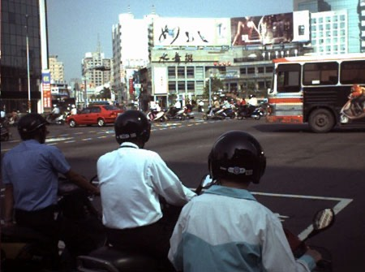
我看到台中的SOGO百貨，挺熱鬧的樣子
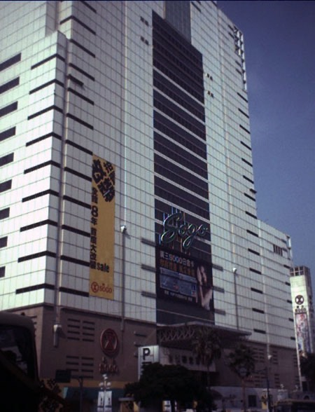
早上8:40，到了台中熱鬧的朝馬轉運站，這邊我搭客運來過好幾次。
但是騎腳踏車來則是第一次。
翻了翻地圖，發現已經遠離台一線了，決定走台12線，經過東海大學，然後接上台一線。
台中朝馬附近，有很多家商店都在賣太陽餅。
而且每一家都號稱自己是『太陽堂』，不是『總店』就是『老店』。
想要在這邊找到一家『分店』，都很困難。
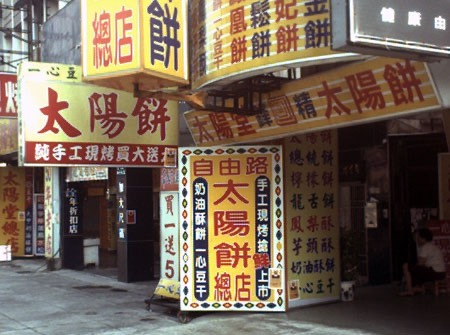
一般來說買太陽餅都是買一送一，我看到最誇張的招牌是買一送五。
不知道會送些什麼東西 @@"
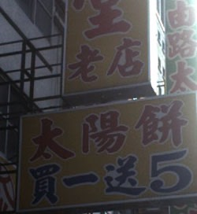
我也買了一盒小太陽餅，花150元，老闆幫我裝開水。
順便問我說是不是騎腳踏車在旅行，今天要騎到哪裡？
我說要從台中騎到台北，他說這可能有兩百公里以上唷...
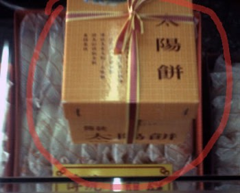
看地圖，往東海大學方向的台12線，是有點高的上坡路。
但是實際騎的時候，看起來路是筆直而且平坦的，
可是騎起來，則是汗流浹背，瀕臨死亡。
明明是平路，可是要把變速器打到1X2，才能騎的上去，好累人呀！
（1X2，是在爬蘇花那種大爬坡時，非用不可的齒輪比）
半路經過比較有名的建築物就是這一棟。
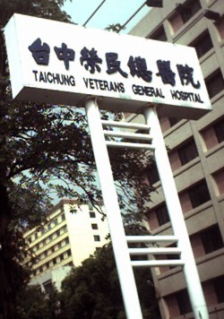
騎到東海大學，我在前面的早餐攤販吃便宜的早飯。
豬血湯(15元)+大餅（15元，北方麵食），才花了30元就吃的好飽好飽！
照片拍歪，加減看，我已經爬東海的坡爬到手在顫抖了，相機拿不穩。
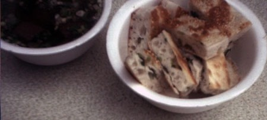
悠閒的用完了早餐，等過了東海大學，就是久等了的下坡啦∼
（大學的『學』被我不小心，『二一』了）
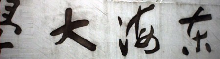
一口氣從東海滑到靜宜大學。
（從左邊念到右邊，是大宜靜，因為嫁給了大雄，所以冠夫姓，宜靜-->大宜靜）
滑呀滑，就接到台一線了，讓我們右轉吧。
今天是環島的最後一天，要一口氣從台中騎回台北的家裡。
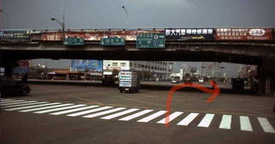
一右轉才騎沒多久，就看見一個熟悉的身影。
這...這不是我的叔叔嗎！？
我小時候常常到叔叔家去吃飯，叔叔人很好，總是笑嘻嘻的，待人客氣。
我過去跟好久不見的叔叔打聲招呼，拍張照片，介紹給各位認識一下......
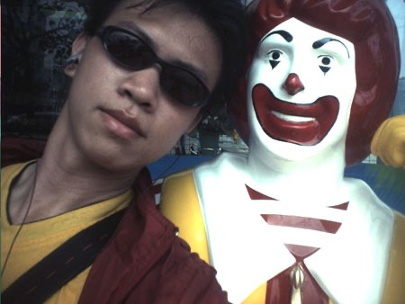
這是麥叔叔當勞先生。
大甲的名產是芋頭，拍兩張照片讓各位看看。
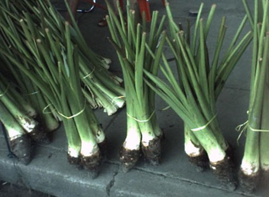
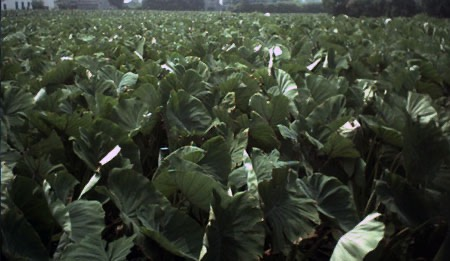
台中有間傢具店，老闆本人的腸胃一定非常勇健才敢誇此豪語！
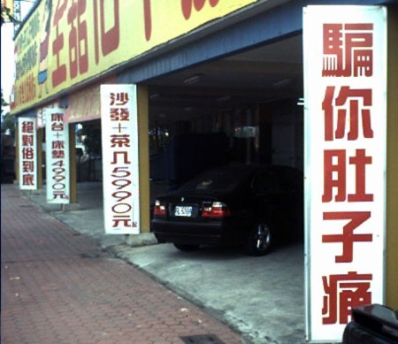
我的右腳都是傷口，不是摔車造成的，是被自己單車的踏板撞到所導致。
很痛...尤其下雨被淋到的時候，為什麼只有右腳會被撞到....這我也不清楚。
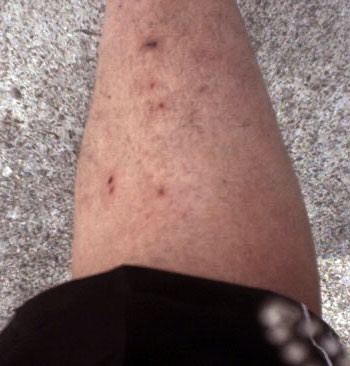
踏板上的突出物，是鋼釘，可以想像撞下去有多痛吧。
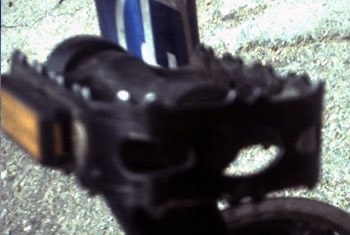
看到橋下的岸旁長滿了芒草，就讓我想到邱妙津，可惜她死的太早了。
不然現在還有很多精彩的女同的書可以看。『鱷魚手札』看再多遍都不會膩呀。
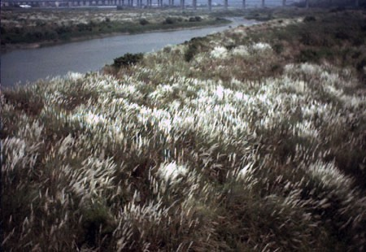
台一線，是一條非常無聊的路。
無聊到讓我不知道該怎麼寫台中->台北這段路的遊記。
如果可以選擇的話，我寧可重新騎一次東海岸，我也不要騎西岸。
我看著邊騎乘邊記錄的手札，上面只記錄了幾點幾分抵達哪裡。
除了這些之外，沒有其他事情值得記錄，連照片也很少拍，沒東西好拍。
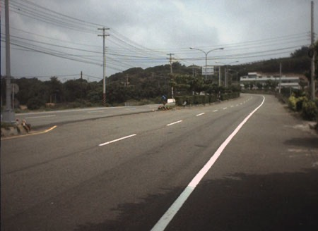
從早上十點，請容我一口氣直接跳到下午四點半，這時候我騎到新竹了。
一路上悶到讓我想睡覺∼有夠無趣的說。
然後晚上六點二十分抵達楊梅。
騎西岸另一個無趣的原因，就是沒有加油聲。
從抵達高雄開始，到台南、嘉義、雲林、彰化、台中、苗栗、新竹、桃園、台北。
連一句加油都沒有，好∼無∼聊∼呀∼悶悶悶悶悶悶悶悶悶悶。
騎的有點累人，我懷疑可能輕微的中暑，趕緊躲在樹蔭下休息。
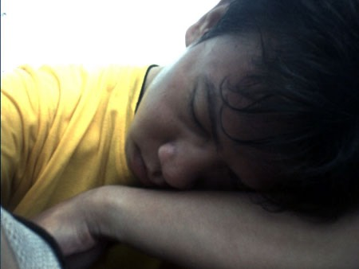
晚上七點四十二分，到達桃園火車站。
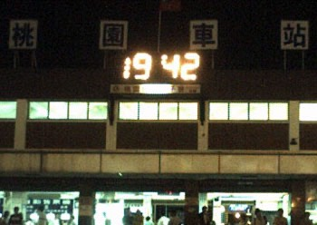
晚上八點四十分，到達新莊的家，繞了台灣一圈從反方向回來的感覺很奇妙。
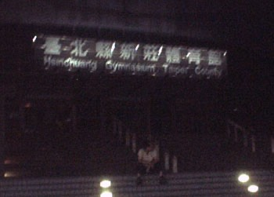
我家的兩隻狗，另外還有一隻，牠們的名字分別叫做小白、小白還有小白...
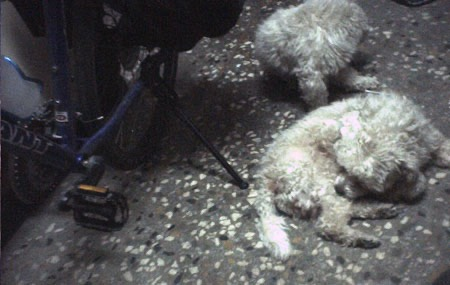
台中-->台北結束，兩腳有點痛，膝蓋部份，酸痛，因為昨天睡網咖沒有洗澡。
身上癢癢的，洗澡去∼
環島結束，Finished∼ 謝謝收看。 m(_ _)m